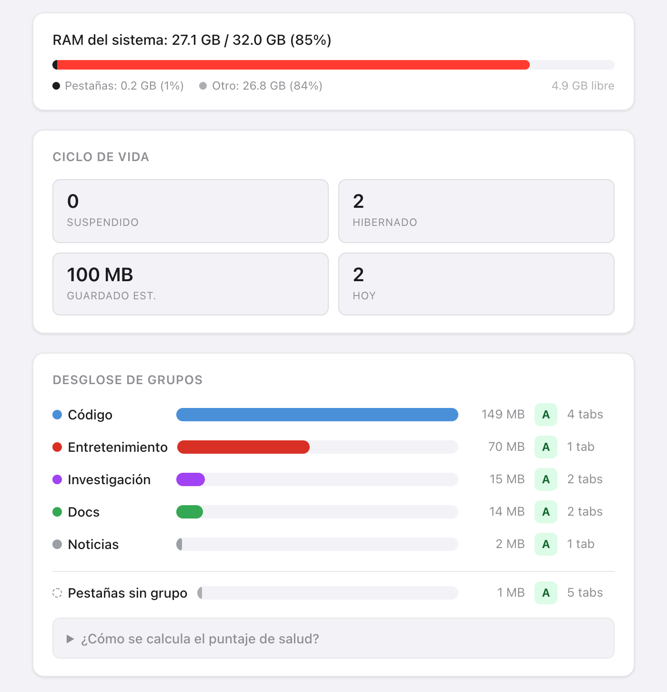
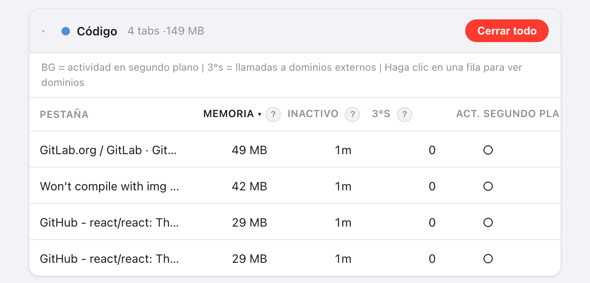
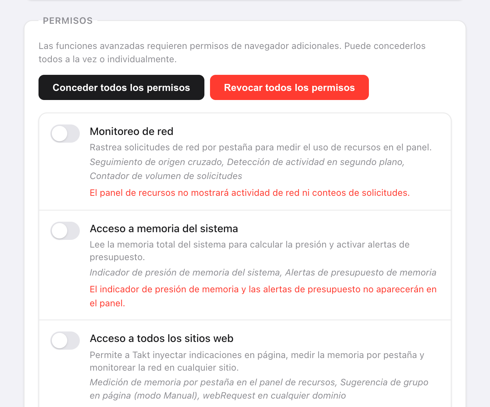

Respuesta corta: abre Opciones → Dashboard en Takt. Los grupos se ordenan por memoria estimada, y las pestañas de cada grupo, de mayor a menor.
- Estimación de memoria por pestaña, tiempo de inactividad, dominios de terceros y actividad en segundo plano.
- Nota de salud de A a F por grupo de pestañas, barra de memoria del sistema y presupuestos de memoria que descargan pestañas por ti.
- Premium (3 $/mes o 30 $/año). Se mide en tu navegador, y nada de fuera interviene.
¿Por qué cuesta tanto saber qué pestaña está usando memoria?
Chrome muestra una cifra de memoria en la tarjeta que aparece al pasar el ratón por una pestaña, de una en una. Con 30 pestañas abiertas son 30 pasadas de ratón, y ningún total.
Además, una pestaña suelta casi nunca importa. Lo que quieres saber es si el grupo que conviene cerrar es "Research" o "Entertainment". Por eso Takt suma la memoria por grupo de pestañas.

¿Cómo estima Takt la memoria de una pestaña?
Takt ejecuta un script breve dentro de cada pestaña y suma cuatro partes:
| Parte | Cómo se mide |
|---|---|
| Heap de JavaScript | Heap en uso, tal como Chrome se lo comunica a la página |
| Árbol DOM | Número de elementos × unos 1,5 KB |
| Recursos cargados | Tamaño descodificado de cada archivo que cargó la página |
| Búferes de canvas | Ancho × alto × 4 bytes por canvas |
Toma el resultado como una clasificación, no como una factura. No incluye la sobrecarga propia del navegador por pestaña, así que la cifra de Chrome para la misma pestaña puede ser distinta.
Algunas pestañas no se pueden medir. En las suspendidas no hay nada en ejecución. Las páginas de Chrome (chrome://), las páginas de extensiones y Chrome Web Store no admiten scripts, así que aparecen en Pestañas no monitoreadas. Si una pestaña no responde en 3 segundos, Takt muestra su último valor conocido.

¿Qué significan las notas de salud de A a F?
Cada grupo empieza con 100 puntos y pierde puntos por cuatro factores:
| Factor | Condición | Penalización |
|---|---|---|
| Memoria (total del grupo) | Más de 500 MB / más de 200 MB | −30 / −15 |
| Tiempo medio de inactividad | Más de 60 min / más de 30 min | −20 / −10 |
| Pestañas con actividad en segundo plano | Más de 3 / al menos 1 | −20 / −10 |
| Dominios de terceros | Más de 50 / más de 20 | −15 / −5 |
Notas: A es 90 o más, B de 75 a 89, C de 60 a 74, D de 40 a 59, F por debajo de 40. Un grupo que usa 300 MB con pestañas inactivas 45 minutos de media obtiene 75: una B.
"Actividad en segundo plano" significa que la pestaña completó una petición de red en los últimos 60 segundos. "De terceros" es cualquier dominio distinto del propio sitio de la pestaña y sus subdominios. Las CDN habituales se cuentan aparte para que no inflen la nota.
¿Qué hago cuando ya he encontrado las pestañas pesadas?
- Recomendaciones de suspensión. Takt propone 5 pestañas para descargar, ordenadas por memoria y tiempo de inactividad, con más peso para la actividad en segundo plano. Deja fuera la pestaña activa, las fijadas y la pestaña que está sola en su grupo. Haz clic en Suspender para descargar una.
- Cerrar todo, en una tarjeta de grupo, cierra ese grupo.
- Hibernar, para la pestaña que quieras recuperar más tarde. Consulta cómo funciona la hibernación.
¿Puedo limitar la memoria que usa un grupo de pestañas?
Sí. En Settings → Memory Budgets, escribe el nombre de un grupo y un límite en MB. Takt comprueba los presupuestos cada 15 segundos.
Cuando un grupo se pasa, recibes una notificación con el grupo, su uso, su presupuesto y el aviso "Suspending tabs in 10s — click to cancel". Si la ignoras, Takt descarga las pestañas más grandes de ese grupo hasta que vuelve a estar dentro del presupuesto. Nunca toca la pestaña activa, las fijadas ni las que están reproduciendo audio. Haz clic en la notificación para cancelar.
Los presupuestos usan las mismas estimaciones, así que también necesitan Acceso a todos los sitios web.
¿Qué permisos necesita el panel?
Ninguno al instalar. Concedes cada uno en Settings → Permisos y puedes revocarlo ahí cuando quieras.
| Permiso | Qué añade | Sin él |
|---|---|---|
| Acceso a todos los sitios web | Estimación de memoria por pestaña | La memoria muestra "—" |
| Monitoreo de red | Dominios de terceros y actividad en segundo plano (también necesita Acceso a todos los sitios web) | Sin columnas de red |
| Acceso a memoria del sistema | La barra de RAM del sistema | "Memoria del sistema no disponible" |
El monitoreo de red solo ve las peticiones hechas después de concederlo. Recarga las pestañas abiertas para empezar a contar. Takt lee las direcciones y los tiempos de las peticiones, no el contenido de las páginas.

Lo que el panel no puede decirte
Estima la memoria de las páginas. No lee la lista de procesos de Chrome, así que no ve la memoria de la GPU, la de las extensiones ni la del propio navegador. Si la barra del sistema pone la mayor parte de tu RAM en "Otro", esa memoria la usan otras aplicaciones o el propio Chrome, no lo que contienen tus páginas.
Encuentra el grupo que se está comiendo tu RAM. Después, ponlo a dormir.
Añadir Takt a ChromePreguntas frecuentes
¿Cómo estima Takt la memoria de una pestaña?
Suma el heap de JavaScript en uso, el número de elementos × unos 1,5 KB, el tamaño descodificado de los recursos cargados y los búferes de canvas a ancho × alto × 4 bytes. Úsalo para ordenar pestañas.
¿Por qué la columna Memoria muestra un guion?
No se ha concedido Acceso a todos los sitios web, la pestaña está suspendida o es una página en la que las extensiones no pueden ejecutar scripts, como las páginas chrome://.
¿El Panel de recursos es gratis?
No. El panel y los presupuestos de memoria son Premium, por 3 $/mes o 30 $/año.
¿Envía Takt los datos de mis pestañas a algún sitio para medirlos?
No. Todas las mediciones se hacen dentro de tu navegador. Consulta cómo mantiene Takt tus datos en local.